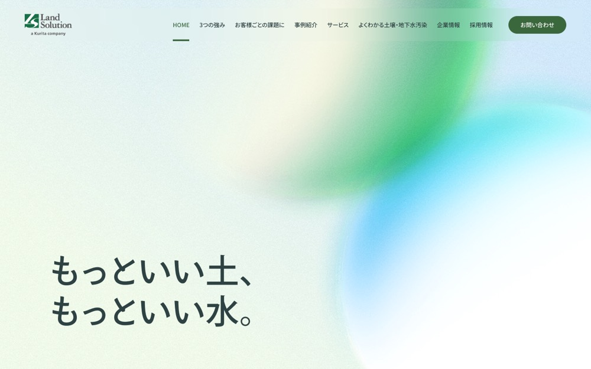

ランドソリューション株式会社
#f5f8f3 の地に #508e64 を大きな面で置く配色。影も枠線もほとんど使わない。本文 16px・行間 1、セクション間 60px。
配色
文字色は #2f4243 / #ffffff / #3b673d。
どこに使っているか（箇所数）
| 色 | 面 | 文字 | 枠線 | ボタンの地 |
|---|---|---|---|---|
#3b673d |
8 | 1 | 1 | 1 |
#ffffff |
1 | 13 | 1 | 0 |
#2f4243 |
0 | 91 | 0 | 0 |
#508e64 は
文字
和文
Noto Sans JP欧文
Crimson Text本文
16px / 行間 1この見本は Noto Sans JP で表示していますあのイーハトーヴォのすきとおった風
あのイーハトーヴォのすきとおった風
あのイーハトーヴォのすきとおった風
あのイーハトーヴォのすきとおった風
あのイーハトーヴォのすきとおった風
あのイーハトーヴォのすきとおった風
あのイーハトーヴォのすきとおった風
余白とかたち
| コンテンツ幅 | 1200px | |
|---|---|---|
| 読ませる段の幅 | 780px | |
| セクションの上下余白 | 60px | |
| 並びの間隔 | 13 / 16 / 20 / 60px | |
| 角丸 | 0px（大きな面は 8px） | |
| 影 | なし | |
| 画面幅の切り替え | 1248 / 1100 / 940 / 767 / 374px |
ボタン
お問い合わせ
transparent / 18px / 500 / 角丸 1440px
もっと見る
#3b673d / 14px / 500 / 角丸 1440px
もっと見る
transparent / 18px / 500 / 角丸 1440px
ページの組み立て
上から順に、実際に並んでいたセクション。高さの比率もそのまま。
1
ヒーロー
1120px
2
1カラム・画像あり
440px
3
3カラム・画像あり
1960px
4
1カラム・画像あり
700px
5
1カラム・画像あり
760px
6
2カラム・画像あり
240px
7
6カラム
1040px
8
1カラム・画像あり
840px
9
1カラム・文字だけ
1040px
10
3カラム・画像あり
480px
全10セクション、すべて全幅。
PCとスマホ
同じサイトを390px幅で測り直した値。
| PC 1440px | スマホ 390px | |
| 本文 | 16px / 行間 1 | 16px / 行間 1 |
| 見出し | 48px | 34px |
| セクションの上下余白 | 60px | 40px |
| 左右の余白 | — | 24px |
| 並びの間隔 | 20px | 20px |
文字サイズの段は 18 / 16 / 14 / 13 / 12px。セクション余白はPCの67%まで詰める。
画像
1:1・9枚
3:2・3枚
16:9・2枚
18枚。うち 6 枚は画面いっぱいに置く。角丸 0px。